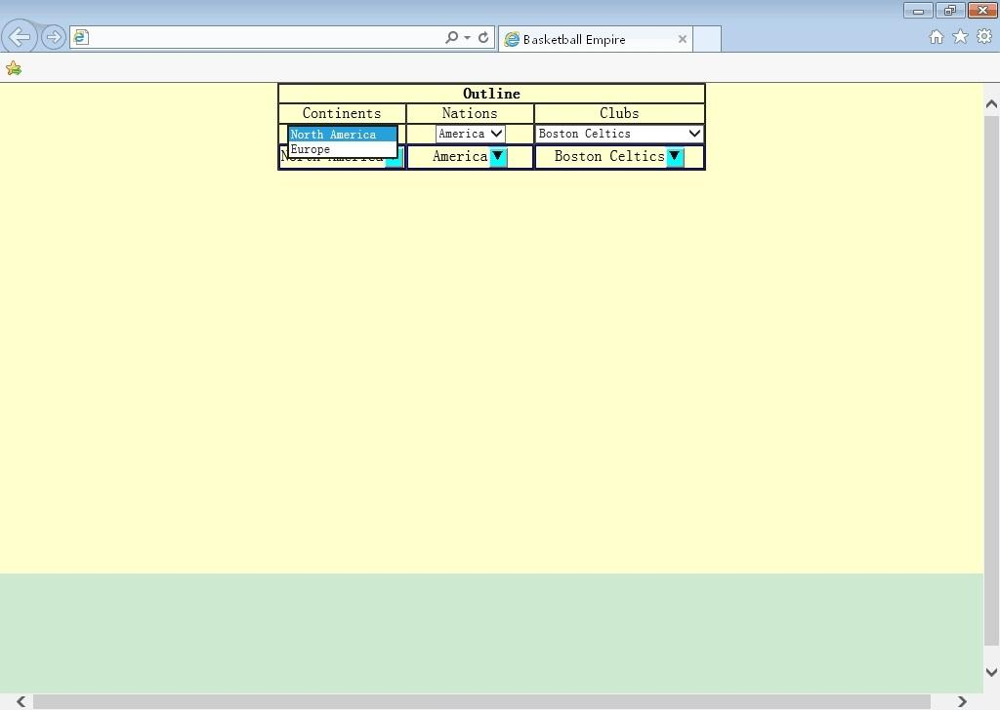

ZhangsSelect
In recent years, a phenomenon emerges several times, is that selects show in confusion, after they are zoomed in firefox browser under a larger resolution ratio. There are some picture examples below:
1.Chrome,1024*768
2.Chrome,1920*1080
3.Firefox,1024*768
4.Firefox,1920*1080
5.IE,1024*768

6.IE,1920*1080
To cope with this situation, I made another free and open select named zhangsSelect individually and specially, and share it with every friend gladly, and thank more improvements to it a lot. Program entry is basketball Empire.html.
2016-9-15.